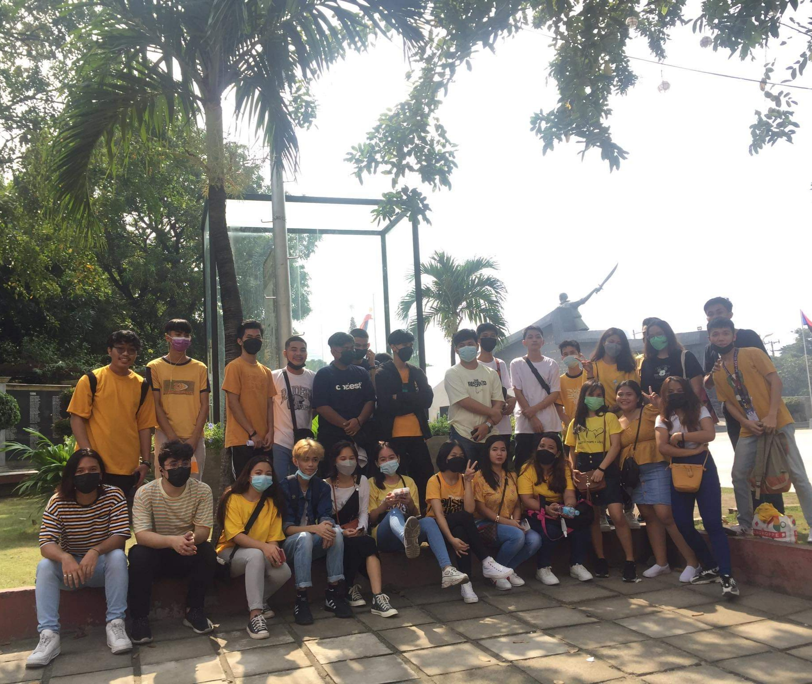
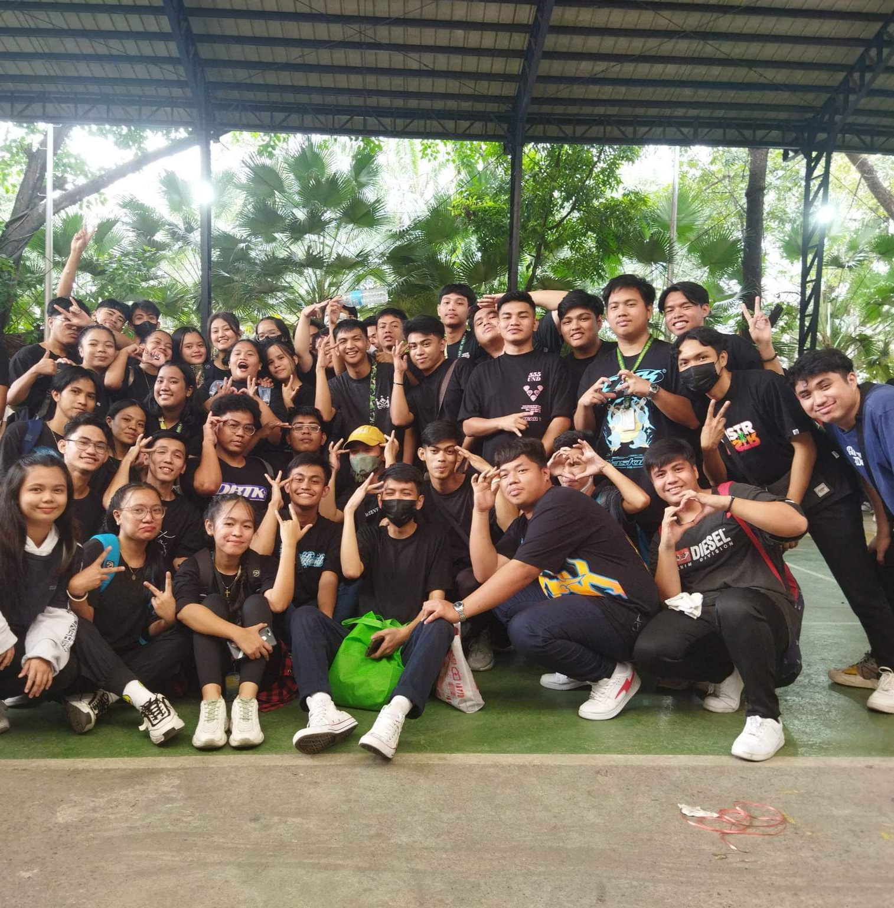

I am a 2nd year college student at Universidad de Manila, the course I took is data science.
When I arrived at the college, I felt nervous and scared because I didn't know much here.
When I entered the 1st year, I thought I would be alone, but I didn't make any friends at that time.
In college, it is here that you realize that you are one of the ones who will do about school works.
That year I had a lot of experiences that I didn't want to do but I didn't have to choose or need to do it for the grades.
I am thankful for being my teacher this year for giving knowledge and high grades.
I especially became more friends last year, but it became sad because of the reblocking section this 2nd year. One of the sad reasons is that close friends are no longer included in that section. But I'm still focused on my goal.
This will also be the way to your dream. There is still a lot to travel in the college year, but it will be worth it because of the dream in life.
Back to the mainpage